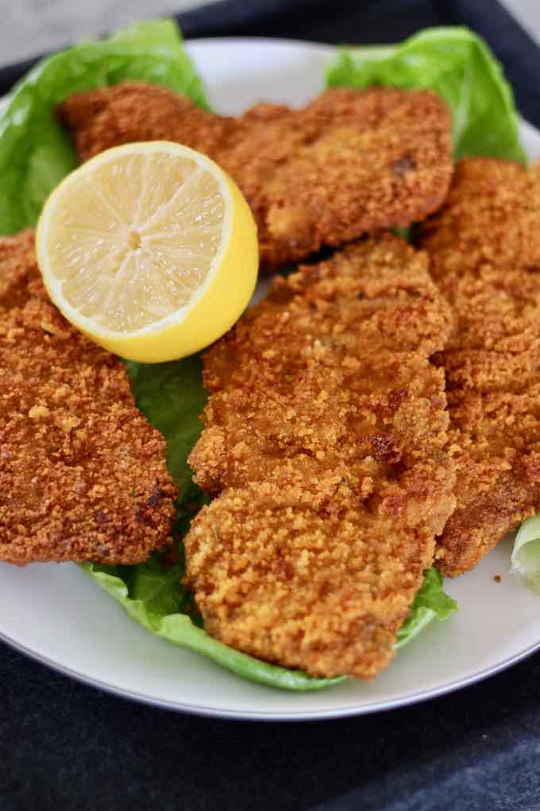

MILANESAS

Description
Milanesas is a typical dish from Argentina, which consists of a fine cut of steak covered with breadcrumbs. This can be baked but it can also be sautéed in the pan with a little oil.
In Latin America and Argentina specifically, the milanesa arrived with Italians during mass emigration between 1860-1920s.
It is an ideal dish to be accompanied with French fries or mashed potatoes, as well as with various varieties of salads. Quick, easy and delicious!
Ingredients
- Veal steaks, Milanese cut or thinly sliced
- Eggs
- Bread crumbs
- Canola oil for frying (Substitute with vegetable or sunflower oil)
- One bunch of parsley
- Garlic cloves
- Salt and pepper to taste
Steps
- Season Veal Steaks and Prepare Beaten Eggs Mixture,Season the veal steaks and let them rest in the refrigerator. Add garlic and parsley to the eggs and mix together. Add salt and pepper to taste.
- Soak and Bread The Veal Cuts,Place the veal steaks into the beaten eggs mixture. Coat with bread crumbs on both sides.
- Fry Until Golden Brown,When the oil is very hot, fry the veal steaks on both sides until they are golden brown.
- Enjoy this icredible meal!
atras